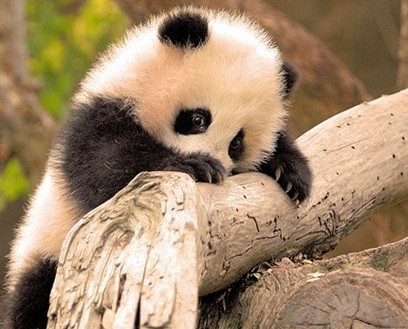
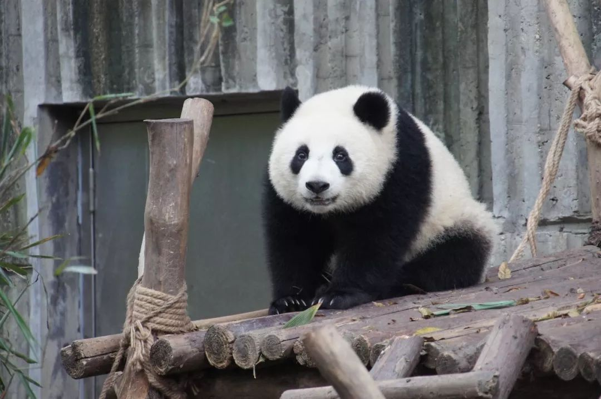
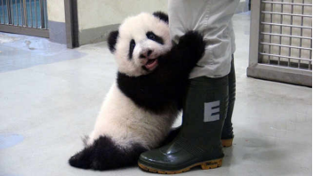

很高兴见到你，我是国宝特工
welcome to world of panda
welcome to world of panda
Part1 滚滚世界
【熊猫其熊】
大熊猫（学名：Ailuropoda melanoleuca）
是食肉目、熊科、大熊猫亚科和大熊猫属唯一的哺乳动物。
外形似熊而略小，头较圆像猫，故名。头躯长1.2-1.8米，
-12厘米，体重80-120千克，最重可达180千克。
前后肢、两耳、眼周、肩部为黑褐色。头胸腹,背为白色。
行走方式为内八字，爪子似解剖刀般锋利。
喜独栖，善爬树，嗜食竹类植物。
现仅分布于中国四川西部和北部、甘肃南部、陕西西南部，
为国家一级保护动物。
也叫熊猫、猫熊、大猫熊。
野外大熊猫的寿命为18-20岁，
圈养状态下可以超过30岁。
大熊猫已在地球上生存了至少800万年，
被誉为“活化石”和“中国国宝”，世界自然基金会的形象大使，
是世界生物多样性保护的旗舰物种。
2016年，世界自然保护联盟（IUCN）宣部讲大熊猫的受威胁程度从“濒危”变为“易危”。

【品种】
大熊猫仅有两个亚种：四川大熊猫&陕西秦岭大熊猫

【颜色】
国宝难题之怎么拍彩色照片？
第一轮尝试：去掉黑色（白色大熊猫）失败—
第二轮尝试：换个颜色！棕色熊猫“应运而生”~
第一轮尝试：去掉黑色（白色大熊猫）失败—
第二轮尝试：换个颜色！棕色熊猫“应运而生”~
【吃食】
#竹子忠实爱好者
国宝们年食谱组成99％以上都是竹子；
#干饭日常
国宝们没有食草动物所具有的专门用于储存食物的复杂的胃和巨大的盲肠，肠胃中也没有用于把植物中的纤维素发酵成能吸收的营养物质的共生细菌或纤毛虫。为了获得所需的营养，唯一的办法就是快吃快拉、随吃随拉。一只体重100千克的成年大熊猫，在春天每天要花12-16小时，吃掉10-18千克的竹叶和竹秆，或者30-38千克的新鲜竹笋，同时排出10 多千克粪便，才能维持新陈代谢的平衡。
#别名“食铁兽”的来源？
他们饿极了就经常潜入村庄跑进厨房想找口吃的，他们爱舔舐锅底的盐，不舔到锅底锃亮决不放弃，所以传说中的食铁兽其实应该叫做“食舔兽”。
国宝们年食谱组成99％以上都是竹子；
野外大熊猫常见的食用竹种类包括：冷箭竹、八月竹、实竹子、筇竹、大叶筇竹、箬竹等 。圈养大熊猫常用的食用竹种类有巴山木竹、刺竹、白夹竹、箬叶竹、淡竹、苦竹、阔叶箬竹等。
但不同年或不同季节也会偶食其他食物。在秋季，大熊猫偶食山区农作物玉米，南瓜和四季豆。在冬季，大熊猫有时下山吃无芒小麦。
#干饭日常
国宝们没有食草动物所具有的专门用于储存食物的复杂的胃和巨大的盲肠，肠胃中也没有用于把植物中的纤维素发酵成能吸收的营养物质的共生细菌或纤毛虫。为了获得所需的营养，唯一的办法就是快吃快拉、随吃随拉。一只体重100千克的成年大熊猫，在春天每天要花12-16小时，吃掉10-18千克的竹叶和竹秆，或者30-38千克的新鲜竹笋，同时排出10 多千克粪便，才能维持新陈代谢的平衡。
#别名“食铁兽”的来源？
他们饿极了就经常潜入村庄跑进厨房想找口吃的，他们爱舔舐锅底的盐，不舔到锅底锃亮决不放弃，所以传说中的食铁兽其实应该叫做“食舔兽”。
【繁育】
熊猫宝宝出生时体重平均只有100克，个头只有母熊的千分之一大小。为了防止被熊妈一屁股坐死，宝宝需要大声哭喊，提醒当妈的小心，如果熊妈生了双胞胎，他只会抚养其中一个，丢掉另外一个，这时就需要用食物吸引他的注意，偷走其中一个，下一次再换另外一个，熊不知鬼不觉，就把两个孩子都喂大了，所以你要问国宝是怎么来的，那就是买一送一，用牛奶换来的。
一个月左右，宝宝就从100克长到2公斤，从彩色照片变成黑白照片，他们属于早产儿。
Part2 盛世美颜
【盛世美颜】
Part3 舔熊猫日常
【大熊猫饲养机构】
- 中国大熊猫保护研究中心
- 成都大熊猫繁育研究基地
- 秦岭大熊猫研究中心
- 北京动物园
- 重庆动物园
- 兰州动物园
【奶爸奶妈】
【中国人舔熊】


被“尊称”为“国宝”的熊猫，用实力印证了颜值就是能当饭吃！
再看看你的表情包，有妹有我们的国宝!（数不胜数罢了）
再看看你的表情包，有妹有我们的国宝!（数不胜数罢了）
Part4 外出打工
【借熊条件】
中国拥有世界上全部大熊猫的所有权。大熊猫的对外租借，最早起源于1982年。
那时候的野外大熊猫数量锐减，当时的中国政府决定不再无偿赠送，而是改为有年限的租借。
并且外国想要租借中国大熊猫，条件极为苛刻：租借国家租借一只熊猫，每年需向中国支付100万美金。如因人为原因造成熊猫死亡，需向中国赔偿50万美金，繁殖生下的小熊猫到了3岁必须归还中国。
【旅美“美香”】
外出打工的国宝总是牵动着国内网友的心。然鹅最近，关于旅美大熊猫美香回家的话题频频登上热搜。
事件要追溯到两个月前，美东时间8月21日，现年已经22岁高龄（相当于人的80岁）的美香在美国华盛顿动物园顺利产下幼崽。在小生命降生后，许多人在留言板惊呼“奇迹”，还有人写道：“她给我的生活带来了新的希望。”
🤛
原本是件令人开心振奋的消息，然而细心的中国网友却通过Panda Cam（大熊猫网络直播）对美香的直播中发现了问题。
据网友反映，正在月子期的美香，似乎不仅没有受到应有的照顾，反而有被虐待的嫌疑。从视频中能够看出，美香和熊猫宝宝被安排在几平米的小“产房”内，以美香的体格别说舒舒服服地休息，连翻身都困难。
因为没有笋、窝头、苹果等食物，美香只有冰坨、竹子，还有干巴巴没有水分的甘蔗。
🤛
事件要追溯到两个月前，美东时间8月21日，现年已经22岁高龄（相当于人的80岁）的美香在美国华盛顿动物园顺利产下幼崽。在小生命降生后，许多人在留言板惊呼“奇迹”，还有人写道：“她给我的生活带来了新的希望。”
🤛
原本是件令人开心振奋的消息，然而细心的中国网友却通过Panda Cam（大熊猫网络直播）对美香的直播中发现了问题。
据网友反映，正在月子期的美香，似乎不仅没有受到应有的照顾，反而有被虐待的嫌疑。从视频中能够看出，美香和熊猫宝宝被安排在几平米的小“产房”内，以美香的体格别说舒舒服服地休息，连翻身都困难。
因为没有笋、窝头、苹果等食物，美香只有冰坨、竹子，还有干巴巴没有水分的甘蔗。
🤛
下次相见 我会更阔爱
I'll be more lovely, see you~
I'll be more lovely, see you~
©2020 新媒体7组